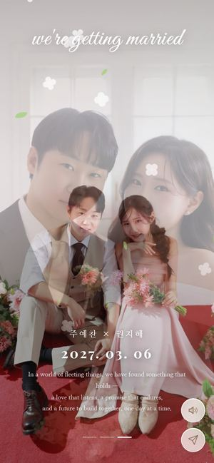
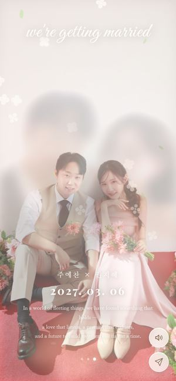
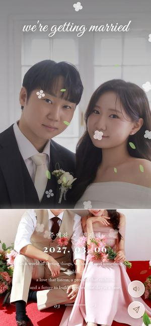
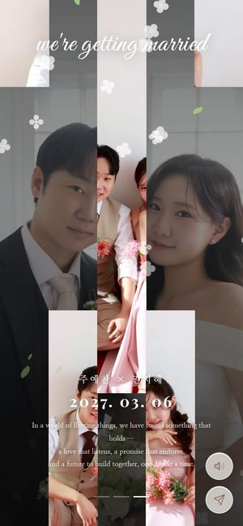
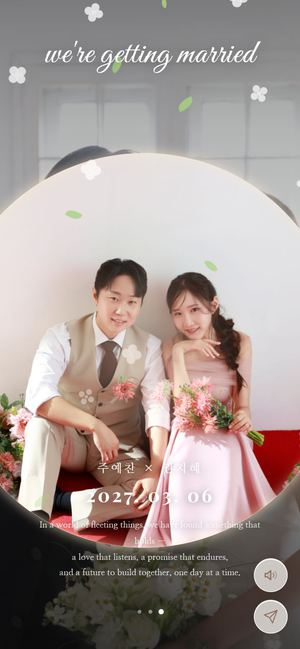
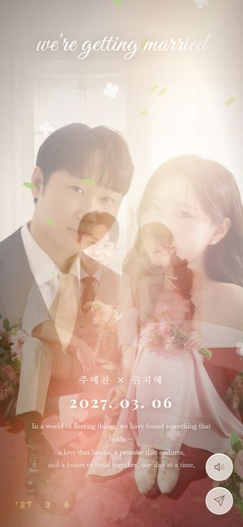
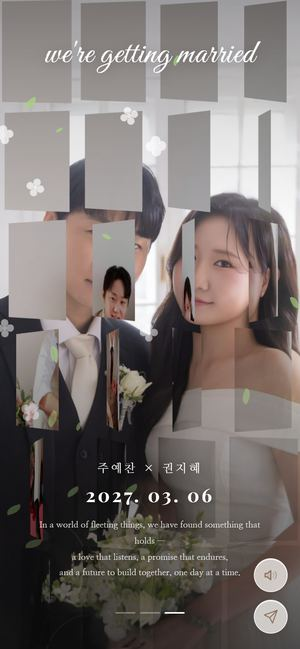
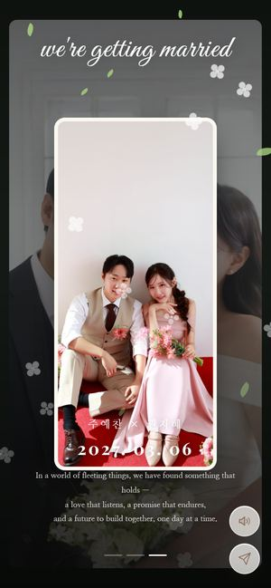

시안을 누르면 실제 청첩장이 열려요. touch를 누르면 대문에서 d1 → d2 → d3 → d1 순서로 사진이 바뀌는 모습을 볼 수 있어요 (한 장당 약 5초). 뒤로 가기를 누르면 이 목록으로 돌아와요.

클래식 · 가장 무난무난① 시네마틱 디졸브사진이 아주 천천히 다가가다가, 다음 사진이 그 위로 부드럽게 겹쳐지며 넘어가요. 영화 오프닝처럼 차분하고 질리지 않는 정석.눌러서 전체 화면으로 보기 →
감성 · 몽환② 꿈결처럼 번지기지금 사진이 빛에 바래듯 흐려지며 사라지고, 그 아래에서 다음 사진이 살짝 다가오며 선명하게 떠올라요. 기억이 겹쳐지는 느낌.눌러서 전체 화면으로 보기 →
고급 · 잡지 화보추천③ 에디토리얼 커튼가는 빛줄기가 아래에서 위로 지나가며 다음 사진을 걷어 올려요. 사진은 서로 반대로 미끄러져 깊이감이 생기고, 숫자(01 — 03)가 굴러가며 바뀌어요.눌러서 전체 화면으로 보기 →
모션그래픽 · 세련④ 세로 띠 교차다음 사진이 다섯 개의 세로 띠로 나뉘어 위아래에서 엇갈려 들어와 한 장으로 맞춰져요. 패션·명품 브랜드 필름 같은 리듬감.눌러서 전체 화면으로 보기 →
모션그래픽 · 인트로와 연결제일 추천⑤ 빛의 원두 사람이 있는 자리에서 작은 빛이 반짝인 뒤, 빛나는 원이 퍼지며 다음 사진이 열려요. 인트로의 ‘안는 자리에서 번지는 햇살’과 이어지는 연출.눌러서 전체 화면으로 보기 →
감성 · 아날로그⑥ 필름 카메라 감성은은한 필름 입자와 비네팅 위로, 사진이 바뀔 때마다 따뜻한 빛샘(light leak)이 화면을 훑고 지나가요. 왼쪽 아래엔 필름 카메라 날짜 도장.눌러서 전체 화면으로 보기 →
모션그래픽 · 화려⑦ 타일 플립사진이 24조각 타일로 나뉘어, 왼쪽 위부터 대각선 물결처럼 한 장씩 뒤집히며 다음 사진으로 바뀌어요. 가장 ‘와’ 하는 연출.눌러서 전체 화면으로 보기 →
감성 · 스토리⑧ 사진 한 장 펼치기지금 사진이 뒤로 물러나면, 하얀 테두리의 인화 사진 한 장이 아래에서 올라와 잠깐 멈췄다가 화면 가득 펼쳐져요. 앨범을 한 장씩 넘기는 느낌.눌러서 전체 화면으로 보기 →